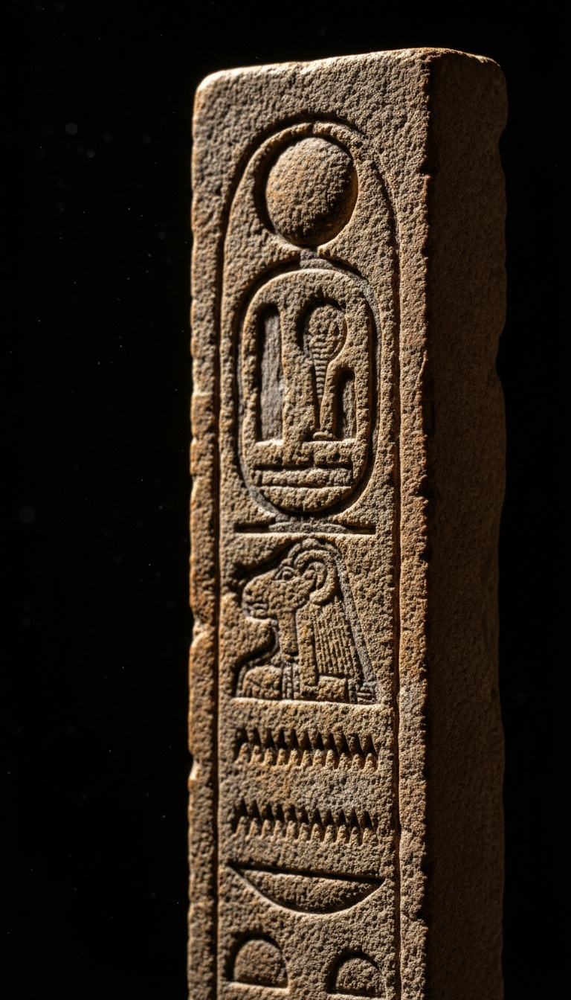

Every prayer on Earth ends with the name of a pharaoh's god. That word is Amun. The scribes who translated your Bible kept it in and said nothing about where it came from.
The evidence is not hidden. It is in the British Museum. It is in the Egyptian Museum in Cairo. It is in the Hebrew text of Numbers, chapter five, verse twenty-two. The trail is that short and that direct.

The Hidden One Ruled Egypt for Fifteen Hundred Years
Amun. The name means "the hidden one." Not metaphorically hidden. Theologically hidden. Amun was the god whose true form could not be seen, whose essence pervaded everything, whose priests taught that he was present in every breath and invisible in every image. His cult center was Karnak, near modern Luxor, Egypt. Construction on the complex began around 2055 BCE under the Middle Kingdom pharaohs and continued for two thousand years under at least thirty successive rulers. The complex covers 247 acres. It remains the largest religious building ever constructed on Earth. You can walk through the hypostyle hall today. One hundred thirty-four columns, the tallest standing twenty-three meters, each carved with Amun's name and the deeds of the pharaohs who served him. The Karnak Open Air Museum holds the original relief blocks on-site. This was not a peripheral cult. Amun was the axis around which the ancient world's most organized religious institution rotated for over a millennium.
The Priesthood That Owned More Than the Pharaoh
Around 2000 BCE, the priests of Amun began absorbing the older solar cult of Ra. The result was Amun-Ra. The hidden god fused with the visible one. The invisible force behind the cosmos merged with the burning disk overhead. This merger was theology in service of politics. By the reign of Ramesses III, circa 1150 BCE, the Amun temple complex at Karnak controlled more agricultural land than the crown. The Harris Papyrus, now held at the British Museum under catalogue number EA 9999, documents it precisely: the Amun temple complex owned two-thirds of all temple land in Egypt, ninety thousand workers, and five hundred thousand head of cattle. The priesthood was a state within the state. Their god's name embedded itself into the language of every civilization they touched through trade, through treaty, and through the bodies of soldiers who marched up and down the Levantine corridor for fifteen centuries.
Akhenaten Tried to Bury the Name. The Priests Buried Akhenaten.
Amenhotep IV took the throne around 1353 BCE. He renamed himself Akhenaten, "effective spirit of the Aten." He closed the Amun temples. He seized their revenues. He sent workers to chisel Amun's name from every monument they could reach. He declared a single solar disk, the Aten, as the only legitimate deity in Egypt and built a brand new capital at Amarna, modern Tell el-Amarna, specifically to cut the Amun priesthood out of Egyptian life. His chief architect was Bek. His royal physician was Pentu. His queen was Nefertiti. None of their work survived the institutional memory of the priests. Within twenty years of Akhenaten's death, the priesthood had erased his face from every surface they controlled. His name stopped appearing in official records. He was called "the heretic" or "the enemy" in later inscriptions. His capital was razed. His statues were smashed. The priests used his carved relief blocks as fill material inside the foundations of later temples at Hermopolis. Archaeologists excavated those blocks in the 1930s. They are now held at the Egyptian Museum in Cairo and the Ashmolean Museum in Oxford. The man who tried to erase the name of Amun from Egypt became a non-person. His own son was born Tutankhaten. Living image of the Aten. The priests renamed the boy Tutankhamun. Living image of Amun. The pharaoh who declared war on a word died unmemorialized. His son became the proof that Amun won.
The priests erased a pharaoh from every monument in Egypt. They could not erase the word from prayer.
Three Faiths. One Closing Word. Zero Explanations.
Judaism, Christianity, and Islam each close prayers and formal affirmations with the same word. The Hebrew scriptures use it thirty times in the Torah alone. The first canonical instance appears in Numbers 5:22, where a priest pronounces a ritual formula and the congregation responds with the word intact. The Septuagint, the Greek translation of the Hebrew Bible commissioned in Alexandria, Egypt, circa 250 BCE, preserved the word transliterated rather than translated. A team of seventy Jewish scholars sat in Alexandria, inside the intellectual capital of the ancient world, with the temples of Amun operating within a day's travel, and decided to render the word as a sound rather than a meaning. Jerome's Latin Vulgate, completed 405 CE, made the same decision. Martin Luther's 1534 German Bible kept it. Every major translation kept the sound intact and none of them wrote a footnote explaining why. Words that carry purely semantic meaning get translated. Words that carry a name do not. The translators of the King James Bible rendered every surrounding Hebrew and Greek word into English. That one word, they left alone.
The Linguists' Argument and Where It Breaks
Scholars at the Oriental Institute at the University of Chicago and at the Hebrew University in Jerusalem argue that the Hebrew root "aman," aleph-mem-nun, meaning "to be firm" or "to be faithful," generated both the Hebrew ritual word and the Egyptian divine name through independent development. Two cultures in the same geographic corridor, trading through the same Levantine land bridge for over a thousand years, each independently produced the same three-consonant root and attached it to the highest expression of cosmic stability in their respective theologies. That is the argument. It requires a coincidence so specific it has an academic name: convergent etymology. The scribes who wrote the earliest biblical texts were educated inside Egyptian administrative systems. The Joseph narrative in Genesis takes place entirely inside the Egyptian bureaucracy, names Egyptian titles accurately, and describes Egyptian grain storage procedures that match the archaeological record. The Book of Exodus states by name that Moses was raised inside Pharaoh's household, educated as an Egyptian, before he ever heard the name of his ancestral god. The Israelites spent four centuries inside Egypt by their own scripture's timeline. The notion that the Hebrew ritual word and the Egyptian divine name share three consonants, the same theological function, and the same position at the close of sacred speech without any transfer between cultures demands more faith than the alternative.
The scholars who built the biblical canon had access to libraries. The scholars who translated it into Greek were sitting inside Alexandria when the Amun priesthood still operated temples across the Nile Delta. They chose to preserve the sound of the god's name rather than render its meaning into the target language. That choice propagated into Latin. Into German. Into English. Into every church, synagogue, and mosque on Earth. Weekly. Without footnote.
The documented record confirms this happened. The question is not whether the word carried. The question is what else the translators kept and chose not to name.
Before you go
7 books the Vatican doesn't want you reading. Free PDF — the texts they cut, with sources. Joined by 140+ Inner Circle members.
No spam. Unsubscribe anytime.
Go deeper
The Hidden Canon, Vol. I — Enoch. Jubilees. Thomas. Mary. Judas. 90 pages, 14 chapters, every receipt cited. The books your Bible quietly removed.
Read the Canon →Books that informed this investigation
As an Amazon Associate, Hidden Epoch earns from qualifying purchases. Cost to you: nothing.
Research safely
The VPN we use to research without being tracked. First 3 months free.
Get NordVPN →